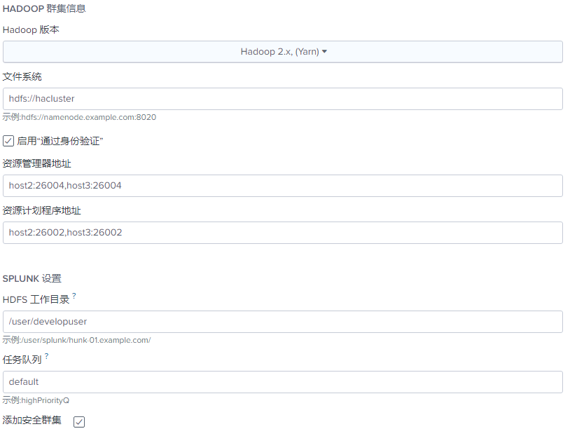
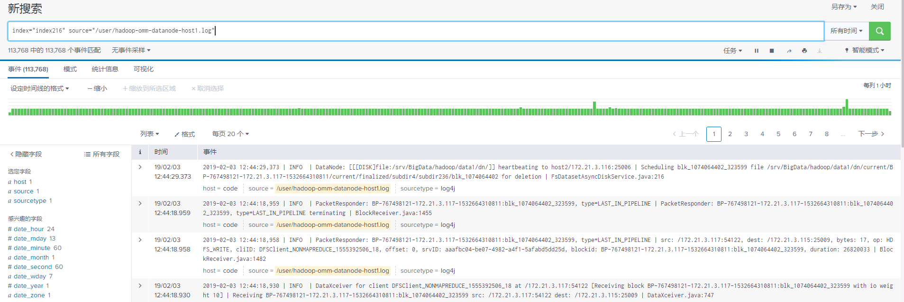
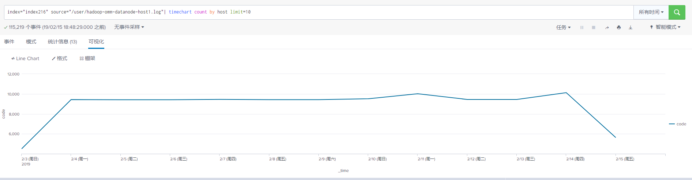
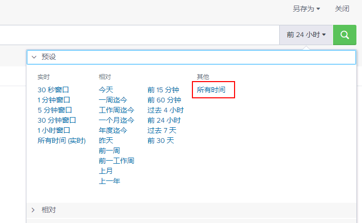

Splunk对接FusionInsight HD
适用场景
Splunk7.2.4 <--> FusionInsight HD V100R002C80SPC200
安装与启动Splunk,获取配置文件
- 关闭主机防火墙
systemctl stop firewalld- 安装Splunk7.2.4,在网址
https://www.splunk.com/en_us/download/splunk-enterprise.html下载Linux平台安装包，使用WinSCP导入主机并用tar -zxvf splunk-7.2.4-8a94541dcfac-Linux-x86_64.tgz解压出splunk目录。Splunk 对接Hadoop集群需要使用Splunk Analytics for Hadoop 组件，该组件不支持Windows版本的Splunk Enterprise，需下载Linux版本Splunk
- 安装Splunk7.2.4,在网址
启动和停止splunk,进入splunk目录执行
./bin/splunk start ./bin/splunk stop第一次启动会显示Licence Agreement页面，输入
y,然后输入用户名和密码
启动成功后显示如下

在浏览器输入
http://ip:8080，输入用户名密码即可进入splunk页面。- 在集群服务端，获取mapred用户的keytab文件以及集群的krb5.conf文,上传至splunk主机中,例如
/opt/splunk/目录下
新建提供程序
- 进入splunk主界面，点击右上角设置，选择虚拟索引
新建提供程序，填写相关信息

- 名称：自定义
- 提供程序序列：hadoop
- Java主页：集群中环境变量JAVA_HOME的值
- Hadoop主页：集群中环境变量HADOOP_HOME的值
填写Hadoop集群信息 
- Hadoop版本：Hadoop2.x(Yarn)
- 文件系统：hdfs://hacluster
- 勾选启用通过身份验证
- 资源管理器地址:resourcemanager服务所在节点ip或主机名,端口为26004,在集群manager界面,选择服务管理->yarn->resourcemanager可查看resourcemanager服务所在节点ip,在服务配置中，可查看resourcemanager服务端口
- 资源计划程序地址:节点同resourcemanager,端口可在服务配置中查看
- HDFS工作目录：自行制定

填写安全设置信息

- 勾选添加安全集群，安全模式选择kerberos
- Kerberos服务器配置选择配置文件路径,填写路径
- kerberos主体名称:mapred/hadoop.hadoop.com@HADOOP.com
- kerberos密钥即为keytab文件
- HDFS主体:hdfa/hadoop.hadoop.com@HADOOP.com
- MapreReduce主体为:mapred/hadoop.hadoop.com@HADOOP.com
- 资源管理器主体与节点管理器主体可不填
其他保持默认，点击“保存”。
新建虚拟索引
- 在新建索引界面，自定义索引名称，提供程序选择刚才新建的提供程序，HDFS 中数据的路径根据需要搜索的路径进行填写，勾选递归处理目录，点击保存。

使用搜索程序
在splunk主页面，点击浏览数据

选择已创建的提供程序和虚拟索引

点击下一步，选择要搜索的文件

在数据预览中，选择数据来源类型，根据数据类型进行选择

点击搜索可以进入对此文件的搜索页面 
可以根据查询需要进行一些可视化展示

读取Hive表
通过Splunk读取Hive表，需要在提供程序中添加以下两个配置：
vix.splunk.search.splitter = HiveSplitGenerator
vix.splunk.search.splitter.hive.serde = org.apache.hadoop.hive.serde2.columnar.LazyBinaryColumnarSerDe

在虚拟索引中配置要搜索的表的信息，包括数据库名称，表名，表头，字段类型，文件类型，分隔符，换行符
目前仅能正确读取rcfile格式的文件

然后在虚拟索引处点击搜索，进入搜索页面，并在搜索框前选择所有时间，即可看到表中数据
